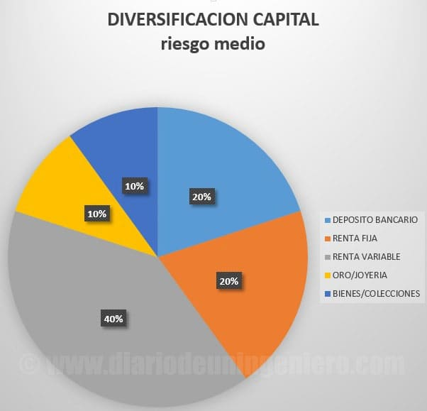
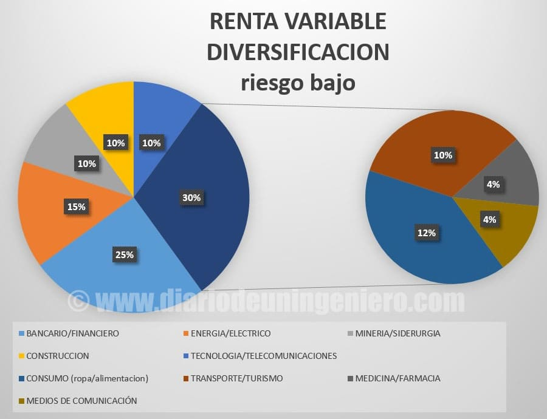

Invest our capital
Many of you who read this thread probably do not know anything about stock market or stock.
But perhaps if you have had or seen a relative with business hands that have put their money in such land or in a trade.
The important thing about all this is always to reduce the risk of failure as low as possible. For this, we must see what is the capital to invest, demand and debt in the event that a loan is requested.
If you are going to receive a loan, the most advisable thing is that the business has begun to give the expected benefits in a year and that the debt can be paid with the benefits in as much as 3 years.
If these premises are not fulfilled maybe the business is not worth it and it is better to look for other options.
Taking all this into account, we should diversify capital in different branches.
In the following graphic I expose a very conservative diversification with the majority of assets invariable over time (jewelry and goods (these may vary depending on the purchase made), and shares or currency (deposit)).

-
The bank deposit is like having our money in a specific currency and with a specific annual interest.
If we are in Spain, a country with low risk of recession and corralito, with the strong euro the risk is very low and if we are in a Spanish bank with an amount of less than 100,000 euros, it would be a nil risk almost.
-
Fixed income or government bonds (very low risk but in particular periods of time the profitability can be high (period 2012-2015) Low risk with potentials of 30% and risk of losses of 15 %.
-
Equities (stock, securities), depends on the skill of the investor. For me, the risk is the least of all shown here.
-
Goods (housing or objects) depends on when you buy and in what area you buy in the case of housing and if they are valuable objects such as pictures it is very subjective but there are also strategies.
-
Gold or jewelry , if we are on the verge of a global recession, it may be the best investment of all the exposed.
In the case of a stable economy, it is revalued according to inflation more or less. Very low risk.
In the case of the stock market, something similar happens. The actions often may not be profitable quickly, but there are technical markers to know when it is time to enter avoiding risks.
When an action falls a lot, it does not mean that the rebound is going to happen suddenly and although there is a good chance of getting a lot of money in a short time also of losing it.
The intention to put money in the stock market is not to make money at once, but to avoid losing it in the long run, even more so if the stock market is not understood.
With this mentality the returns can be substantial. To evaluate a stock market value there are two ways to see it.
- From the point of view of the health of the company, looking at its economic data, expenses, debt and profit over time. All this is called fundamental analysis .
- And from a technical point of view , taking into account how the action has behaved over time and how it has reacted to good and bad events.
In addition to the analysis by means (MACD) and different indicators such as the accumulation of the action, number of daily purchase orders, etc.
But the key to the stock market is the distribution of capital, or how to say diversification .
We can never be 100% sure on the stock market at all, normally the price at which it is quoted is the price at which the company is worth at the moment, counting the price of all the shares.
In most cases, this subjective price does not correspond at all with reality and it will be up to the investor to know if that company is overvalued or undervalued.
Normally, time puts all the companies in their place. Many times the value trades above its value, not because it is expected that the company will improve if not for reasons of certain individuals who have
great capital inside. At the moment you want to pull the stock down you can fall and hard so it is not good to have more than 10% on a particular value.
In addition to not having all our capital in a specific company, we must also diversify and not group the shares in a specific sector.
If a mineral falls and we have in mining companies, the most normal thing is for all of them to fall in a greater or worse way. Like this if a bank goes down due to a macroeconomic event, many banks will go down.
If a bank collapses or bankruptcy it can affect several banks to a large extent since it is all interconnected. Therefore, it is advisable to distribute by sectors.
Next I show the portfolio example that I would recommend to minimize risks to the maximum.
This is better done for the current situation, if not the banking and financial sector should be smaller, since it carries its risks but now we are facing the beginning of interest rates in the euro zone.
Esto beneficiara a los bancos.

There are sectors that are cyclical and behave well in a range of time and in another range they begin to decline, such as mining or steel or the banking case.
Below I will review the IBEX35, to explain how the sectors in the indices are diversified.
At present, the level of the IBEX35 is somewhat bloated and should correct, although it is one of the most potential in the medium term.
It is also advisable to diversify by countries and currencies, although the Spanish case currently does not present any risk.
While there are emerging countries with companies that have a greater potential and could have a 15% portfolio in these countries.
Cyclic sectors
-
The mining or steel industry began to rebound in 2016 and there have been returns close to 100% or 200% in many of these companies these two years.
Now it is in a mature stage, there are still rises but the risk is higher than when they were at minimum.
In this group in the IBEX we can find actions such as ACERINOX or ARCELORMITTAL , both with an impeccable uptrend.
Between these two is much more robust ACERINOX, since it has behaved much better
before the fall of the price of the metals the past years.
Furthermore, in this specific case it is also due to the fact that ACERINOX is a company that works with metal and does not sell it as such, which gives it added value.
That is why the fall of metals influences them a little less.
On the other hand we also find REPSOL, which has doubled its value from minimums, although here there is a high risk since the geopolitical tensions between the producers of OPEC and the United States is remarkable.
A big fall in prices could occur at any time so I do not recommend entering values like that.
Companies that depend on raw materials have a high risk, since they fluctuate a lot for good as well as for bad.
In the current case with a good entry by technician it could be advantageous to have no more than 15% of portfolio value.
In the field of oil and gas industry, we have TECNICAS REUNIDAS , which suffered a major adjustment two years ago due to not meeting the prospects.
That drop could be the necessary indicator to move the value back and I already recovered the value I had previously.
-
The banking sector is also cyclical and has been in an upward phase since the "crash" of 2008.
Although with some occasional alterations in the time that made fall the quotation of the same as in the case of the Brexit or the crisis in the OPEC of beginnings of 2016 that finally was not more than a warning.
Right now things are looking very good in the banking sector since the policy of rates 0 seems to be coming to an end and we could see a much more restrictive policy with the money in which the banks are the main beneficiaries.
And the most disadvantaged are those companies with a high debt. Therefore, here I would recommend entering up to 30% of the value in the portfolio.
Of all the banks in the Spanish sector, SANTANDER, BBVA, BANKIA, BSABADELL, CAIXABANK or POPULAR , I see better management and better entry price in BANKIA.
-
Another interesting cyclical sector is construction which is now starting to take off and a new momentum is expected when Trump announces its new infrastructure plan.
The most benefited companies would be those multinationals with a presence in the United States such as ACS or FERROVIAL .
Spain has quite advanced companies in this field and many are at a clear upward moment such as SACYR , which has stopped its rebound period.
>
Less cyclical sectors
-
In this case we would have the energy or electric companies that are in very good shape in Spain because they have the backing of the government.
The rises are staggered and have been in a bullish trend for several years with constant and sound benefits. This is the case of ENDESA, IBERDROLA and GAS NATURAL as well as RED ELECTRICA .
Other electricity companies with an unstoppable uptrend are GAMESA that unlike previous ones has not had favorable treatment and has a good value thanks to the management of it.
GAMESA had to deal with the renewables crisis after the Zapatero government and has multiplied its value exponentially until today, to the point that it has merged with SIEMENS recently.
with the aim of being a leader in their field.
Another Spanish renewable company is ABENGOA which could be the case antagonistic to GAMESA. With a disastrous management by the management team have been on the verge of sinking the company.
Currently the company is led by Urquijo and other renowned executives in Spain who will do everything in their power to recover the position they deserve.
This company has recently made a dilution of the value of its shares, losing shareholders and creditors almost the total amount of money invested.
Right now, the action does not reflect at all the value of the company and could be a clear sign of entry into the value.
After the storm although the risk even in the company is high, the information I have about it indicates otherwise.
While there are many things still in the air that can vary a lot of what we are talking about so the risk is high.
-
Another non-cyclical sector would be the technological with few representative companies in the Spanish stock market, since Spain has never been good in that field.
As an exponent we would have INDRA , a rather state-owned company dependent on the state. Its value is rather lateral and for nothing is a value in which to risk the money since it is moved by 4 people with privileged information.
In addition, the risk of losing is more than winning, there are many foreign technology companies with better perspectives and more transparent data.
On the other hand we have TELEFONICA , Spanish telecommunications company of the largest IBEX. Although the prospects of this company are bearish in the long term.
It has numerous financial problems and the benefits have been decreasing with the years as the monopoly has been finished and the umbrella of the European Union has been disappearing.
In addition, the high debt of the company can be a problem that is still to come, with the increases in rates that are coming. A value to be for technical reasons and not recommended in the long term.
Other smaller companies with high potential as a technician have been taken over by large companies such as INDRA, so in this sector we see few options, because if a company stands out it does not take long to be opaded or merged with another.
-
In the consumer sector we could find INDITEX and DIA as representatives in Spain.
INDITEX, with an impeccable trend since its birth, now presents some risk because it is so big and so capitalized that, no matter how bullish it may be, it carries its risk.
DIA, on the other hand, is quite young on the stock market and has good prospects at the current price.
-
Sometimes cars are seen as their own sector, although I see it more as a part of the consumer sector.
In Spain we do not have a car company, although it is true that we have more factories and jobs in this sector than in countries that are home to car companies.
On the other hand I add another sector that many times is included in the consumption as it is the sector of the tourism and transports and also the doctor and the journalist.
-
Another interesting sector is the tourist with great prospects in companies. Highlights the hotel chain MELIA and NHHOTELES . They have an impeccable uptrend and an assured annual return.
In addition to the transport that is vital in tourism, we find companies like AENA , backed by the government that has tripled its value since it went public 3 years ago with an upward trend that seems to have no end.
We also found IAG , former IBERIA, Spanish and British airline with enough clouds due to BREXIT that thanks to the low oil prices of these years has benefited greatly.
-
Here is also the medical sector and the pharmacist with GRIFOLS leading the way in Spain with good long-term prospects.
-
We also have here the media sector with large leading groups such as VOCENTO, PRISA or MEDIASET with good results.
Although they have had to adjust their profits and make a transfer to the digital era that is coming, taking income from advertising on the Internet.
![[Valid RSS]](https://www.feedvalidator.org/images/valid-rss-rogers.png "Validate my RSS feed")